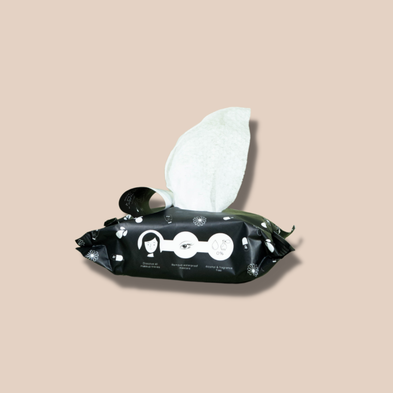

A Guide to Choose the Best Facial Cleansing Wipes
Efficient, convenient, and quick, cleansing face wipes make it easy to clean the skin. Although they won’t replace our trusty traditional facial cleansers, these pre-soaked cleansing face wipes do an excellent job of removing dirt, oil, and makeup whenever and wherever. Sometimes, when we’re too busy or tired, these facial wipes can be really handy to cleanse your face in a jiffy. Cleansing face wipes were created to keep you clean on the go, whether it’s to freshen up without having to wash your face in the bathroom at work or get rid of excess oil and dirt throughout the day. You can easily reach into your bag to swipe with these multifunctional wipes that do more than just clean and remove your makeup. Luckily, most cleansing facial wipes nowadays are formulated with skin-friendly ingredients that suit any skin type.
A Guide to Choose the Best Facial Cleansing Wipes
There are hundreds of facial cleansing wipes available on the market; but finding one that suits your skin and lifestyle needs is easy. On top of that, they are also affordable, easy to use, and come with tons of benefits that can be good for your skin. However, when choosing the best facial cleansing wipe, we recommend checking out the ingredients and keeping a lookout for harmful chemicals, alcohol, silicones, mineral oils, and fragrances.
Oily Skin
Any facial cleansing wipe works for oily skin since most moist cloths do a job of cleansing the skin and removing oils, impurities, dirt, and even makeup. Any type of cloth material or tissue works, depending on the user’s preference. You can look for double-sided cleansing tissues with a soft side to clean and an exfoliating side to remove dead skin cells. Look out for harmful ingredients like mineral oil that may worsen or trigger acne.
Dry Skin
The best facial cleansing wipes for dry skin are those infused with moisturising ingredients to keep your skin soft and comfortable. Swiping gently works best from the neck up to the face.
Normal Skin
If you want to switch the usual baby wipes to a facial cleansing wipe formulated for a specific purpose, there are tons available to suit normal skin types. Whether it’s for makeup removal or to get rid of grime in the middle of the day, any type of facial cleansing wipe can be used.
How to Use Facial Cleansing Wipes
When it comes to using facial cleansing wipes, the best way to use them is to be gentle on the skin. Wipe your face in circular motions all over the face, and avoid harshly rubbing and pulling at the skin. You can use multiple wipes to ensure you get all the oil, grime, impurities, and makeup off your face until the tissue appears clean. Don’t forget to swipe over the neck, as well.
When using facial cleansing wipes over makeup, especially around the eye area, avoid aggressively swiping and rubbing too much. Since the eye area is delicate and thin, rubbing this area too hard may cause fine lines and irritation. It’s better to dab, hold the moist cloth over the eye, and then swipe off gently until the eye makeup is removed. If there’s any residual makeup, especially waterproof ones, you can use makeup remover afterward for a more thorough clean.
Lastly, if you feel like there’s any residue left behind from facial cleansing wipes, you can rinse off your face afterward with water or double-cleanse with your facial cleanser. This is to avoid any irritation, clogging of pores, and breakouts. In doing so, you can get rid of dirt, impurities, and makeup that was spread all over and left behind properly.
What are the best facial cleansing wipes to use?
The best facial cleansing wipes to use depend on your skin type and concerns. You may check the ingredients to see if there are any ingredients added that may irritate your skin. We recommend the ZarZou Trace-Free Facial Wipes which are formulated to cleanse the skin while nourishing it at the same time. It’s infused with ingredients that are gentle on the skin, such as rice milk, niacinamide, calendula, and sodium hyaluronate. It also helps remove waterproof makeup!
